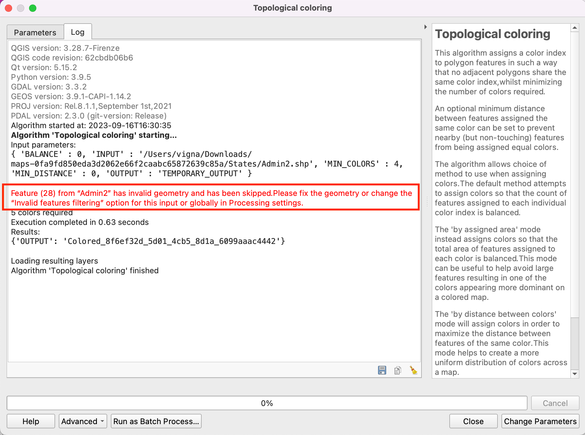
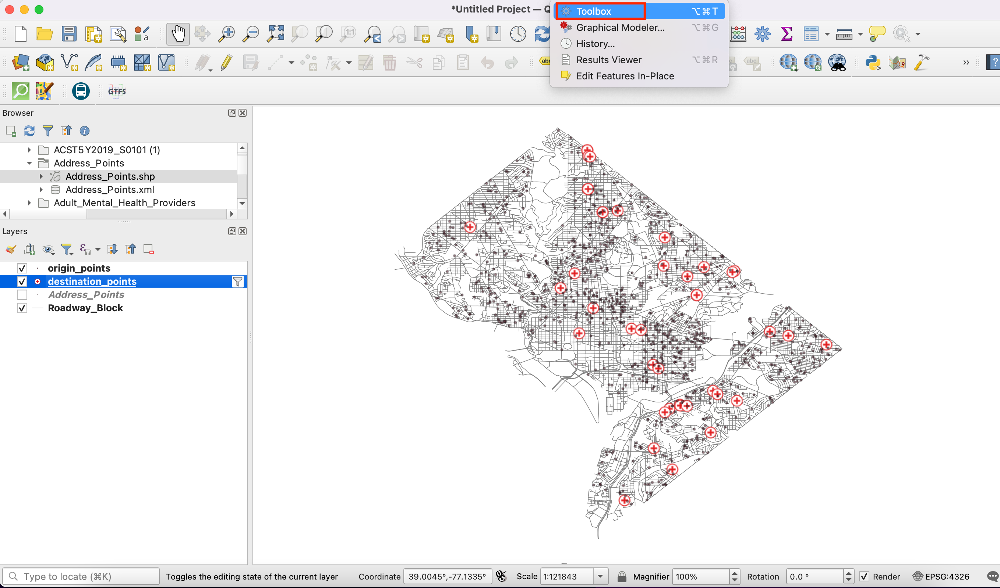
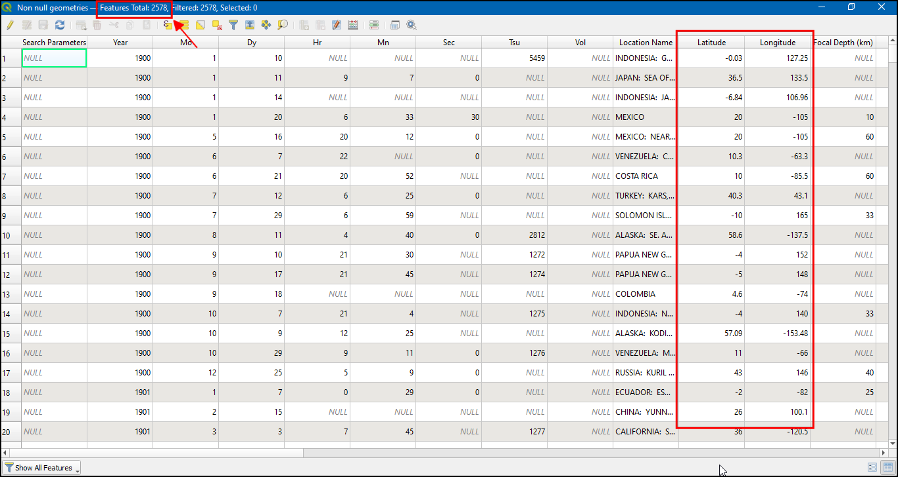
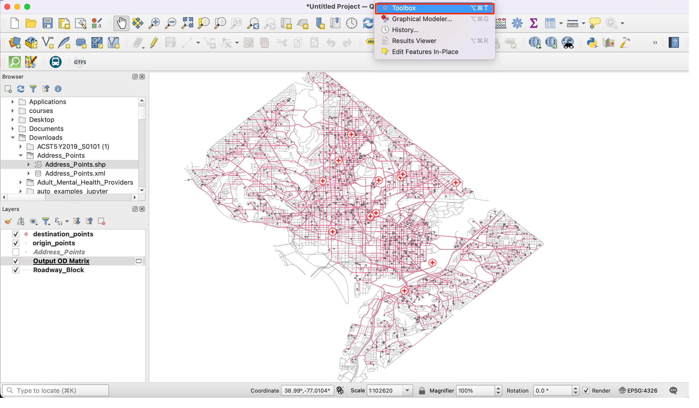
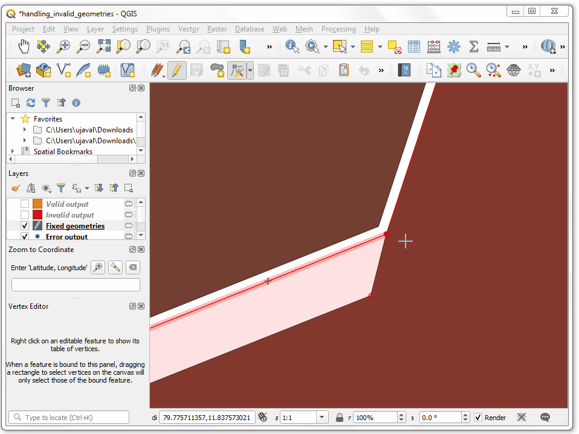
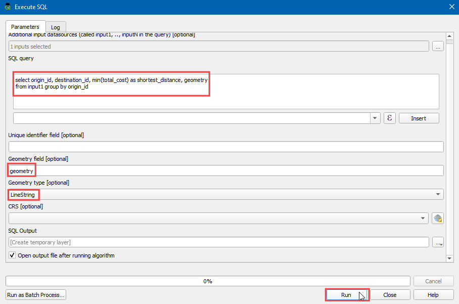
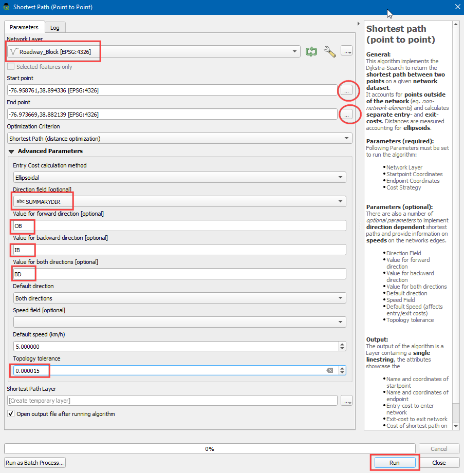

Ujaval Gandhi
Ujaval GandhiHandling Invalid Geometries (QGIS3)¶
When working with vector data layers, you may encounter geometry errors. These errors often become part of your data after running geoprocessing, digitizing, editing or data conversion. QGIS3 comes with build-in tools and algorithms to detect and fix invalid geometries. This tutorial will show you a typical workflow for handling invalid geometries in your data.
Bemerkung
Different software systems implement different notions of geometry validity. But the leading standard for the geometry model for use in a GIS is the OGC Simple Features Specifications (SFS). In this tutorial, we will use GEOS library to check for geometry validity which uses this standard. This post gives a good overview of common geometry errors as defined by the OGC standard.
Overview of the task¶
We will work with an admin boundary layer for India and fix a geometry error for a state polygon.
Other skills you will learn¶
Using the Topological Coloring algorithm to apply a coloring scheme to a polygon layer.
Get the data¶
Datameet provides community-created administrative boundary shapefiles for India.
Download the Datameet Spatial Data Repository [~150 MB] zipfile. The downloaded archive contains multiple folders. Extract the archive and use the files in the States/ folder.
Data Source: [DATAMEET]
Procedure¶
Browse to the downloaded
India-States.zipfile in QGIS Browser. Expand it and drag theIndia-States.shpfile to the map canvas.

You will see a new
India-Stateslayer loaded in the Layers panel. Go to .

We will attemp to run a processing algorithm on the input layer to demonstrate how invalid geometries can cause problems during geoprocessing operations. Search for and locate the algorithm. Double-click to launch it.

In the Topological coloring dialog, select
India-Statesas the Input layer. Keep all other parameters to default and click Run.

Bemerkung
The Topological coloring algorithm implements an algorithm to color a map so that no adjacent polygons have the same color. This is a useful cartography technique and the Four Color Theorem states that 4 colors are enough to achieve this result. There is a graph-theory version of this theorem called Five color theorem. The QGIS algorithm implementation is based on graphs so in practive you will see that complex polygon layers such as this will require upto 5 colors.
As the algorithm runs, you will see a warning displayed in the Log tab. 1 feature in the input layer had invalid geometry and was skipped during the processing. The default setting to handle invalid geometry in the Processing Toolbox is located at and is set to
Skip (ignore) features with invalid geometries. This is a good default setting, but if your input is large, you may miss this warning and may not know that an input feature was skipped. You may want to change the value toStop algorithm execution when a geometry is invalid.

Back in the main QGIS window, you will see a new layer
Coloredadded to the Layers panel. Notice that the new layer is missing a state which had invalid geometry. We now know that this particular state polygon had invalid geometry but we don’t know what was the cause. We can easily find that out. Search for and locate the algorithm.

In the Check Validity dialog, select
India-Statesas the Input layer. SelectGEOSas the Method. Click Run.

As the algorithm finishes processing, you will see 3 new layers in the Layers panel -
Valid output,Invalid outputandError output. The layerError outputcontains the locations and description of the geometry errors. Right-click it and select Open Attribute Table.

Bemerkung
The QGIS documentation has a detailed article on Types of error messages and their meanings that explains the causes of all the errors.
You will see that the error message is Ring self-intersection. Select the row and click Zoom map to selected features button. As you zoom in, you will see the root cause of the geometry error.

QGIS comes with a built-in algorithm to fix geometry errors automatically. Search for and locate the algorithm. Double-click to run it.

In the Fix Geometries dialog, select
India-Statesas the Input layer and click Run.

A new layer
Fixed Geometrieswill be added to the Layers panel. At this point, the geometry error is fixed and you can run any processing algorithm on this layer without problems. But we can see that there is still a gap between the adjacent polygons that is unexpected and can cause topological errors down the line. We can fix this too by editing the polygon. Click the Toggle Editing button in the Digitizing Toolbar. Select the Vertex Tool and from the drop-down selectVertex Tool (Current Layer).

When the vertex tool is active, click on a vertex to select it. You can press Delete key to delete a vertex or drag it to move it. You can move the vertex so that the polygon edge now touches the adjacent polygon.

Once done, click the Toggle Editing button again and click Save.

Let’s run the algorithm again.

In the Topological Coloring dialog, make sure you select
Fixed Geometriesas the Input layer. Click Run.

You will see the algorithm run without any errors and a new layer
Coloredwill be added to the Layers panel. Note that the algorithm doesn’t color the layer by itself, but works by adding a new column calledcolor_idto each polygon that can be used to assign a unique color that is different than adjacent polygons. Select theColoredlayer and click the Open the Layer Styling Panel button.

Select
Categorizedrenderer and the columncolor_idas the Value. Click Classify. You will now see the map colored so that adjacent polygons have different colors.

If you want to give feedback or share your experience with this tutorial, please comment below. (requires GitHub account)